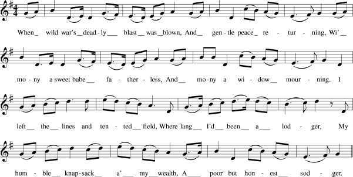

Charlie's Landing
L'arrivée de Charlie
Text By Lady Carolina Nairne
"Scottish Minstrel" (1821-1824)To be sung to the air :
Tune "When Wild War 's deadly blast" or "The Mil, Mill-O"
Sequenced by Christian Souchon

|
The tune is also known as
"The Mill, Mill-O"
.
It appears in David Herd's "Ancient and Modern Scottish Songs", Volume I, 1769 or 1776 and in Johnson's "Scots Musical Museum" (Vol. III - N°242) in 1790. "The first publication date attached to this song is 1721, when it was printed by Allan Ramsay, (the author of 'Lochaber' . Verse 1: 'Beneath a green shade I found a fair maid, Was sleeping sound and still! O; A lowan (=quiet while) wi' love my fancy did rove Around her wi' good will O: Her bosom I prest; but sunk in her rest, She stir'd na my joy to spill O: While kindly she slept, close to her I crept, And kiss'd and kiss'd her my fill O.' There is a copy of the song included in Mrs Crockat's 1709 Manuscript. The song continued to be printed but varied greatly which suggests an older date of composition, with a wider diffusion across the oral tradition. This melody also accompanies another song, written by Robert Burns, entitled 'The Soldier's Return' . Verse 1: When wild war's deadly blast was blown, And my gentle peace returning, Wi' mony a sweet babe fatherless, And mony a widow mourning: I left the lines and tented field, Where lang I'd been a lodger; My humble knapsack a' my wealth, A poor and honest sodger. Source: "National Burns Collection" |
La mélodie est également connue sous le titre
"The Mill, Mill-O"
.
Elle figure dans les "Ancients and Modern Scottish Songs", volume I, 1769 ou 1776 de D.Herd et, sous le N° 242, dans le volume III du "Musée Musical Ecossais" de Johnson, publié en 1790. "La première date de publication connue pour ce chant est 1721 (par Allan Ramsay, l'auteur de 'Lochaber' ): Première strophe: 'Une jeune beauté s'était d'un profond sommeil Endormie sous de frais et verts ombrages L'amour ne sait que trop bien qu'à des pièges pareils Aucun coeur ne résiste à mon âge: Quand je pressai son sein, cette belle assoupie, Ne fit aucun geste qui pût troubler ma joie: Alors je m'allongeai près de la chère endormie, Et je l'ai embrassée mille et mille fois.' Le manuscrit de Mme Crockat, datant de 1709 comprend une copie de ce chant qui fut imprimé par la suite à plusieurs reprises avec une infinité de variantes qui laisse supposer qu'il fut composé à une date bien plus reculée et qu'il appartient à une très large tradition orale. La même mélodie accompagne un autre chant, de Robert Burns, intitulé 'Le retour du soldat' . Première strophe: ' Lorsque l'on vit la douce paix, enfin de retour, De la guerre éteindre l'horrible flamme, Laissant l'enfant sans père, et la femme sans époux, Seule, portant le deuil la mort dans l'âme, J'ai quitté les abris qui me servaient de toit. Longtemps j'ai habité ces toiles brunes. Mon sac à dos était, pauvre et honnête soldat,' En ce bas monde, toute ma fortune! Source: "National Burns Collection" |

|
CHARLIE'S LANDING.
1. There cam a wee boatie [1] owre the sea, Wi' the winds an' waves it strove sairlie; But oh! it brought great joy to me, For wha was there but Prince Charlie. The wind was hie, and unco chill, An' a' things luiket barely; But oh! we come with right good-will, To welcome bonnie Charlie. 2. Wae's me, puir lad, yere thinly clad, The waves yere fair hair weeting; We'll row ye in a tartan plaid, [2] An' gie ye Scotland's greeting. Tho' wild an' bleak the prospect round, [3] We'll cheer yere heart, dear Charlie; Ye're landed now on Scottish grund, Wi' them wha lo'e ye dearly. 3. O lang we've prayed to see this day; True hearts they maist were breaking; Now clouds an' storms will flee away, Young hope again is waking. We'll sound the Gathering, lang an' loud, Your friends will greet ye fairlie; Tho' now they're few, their hearts are true, They'll live or die for Charlie. |
L'ARRIVEE DE CHARLIE
1. Un petit vaisseau [1] vient de traverser la mer Au vent, aux vagues il a tenu tête. A son bord le Prince Charles qui m'est si cher Oui, et c'est pourquoi j'ai le coeur en fête. Le vent souffla si fort et il a fait si froid, Ses chances de succès sont fort minces. Mais nous sommes venus bien volontiers, ma foi Pour souhaiter la bienvenue au Prince. 2. Tu trembles de froid dans ce léger vêtement. L'embrun mouille ta blonde chevelure ; Nous t'envelopperons dans un plaid de tartan. [2] Vois, l'Ecosse salue ton aventure. Tout lugubres que soient ces monts et ces vallées, [3] Ils doivent emplir ton coeur d'allégresse: C'est le sol de l'Ecosse qui vient d'être foulé, Par celui vers qui va notre tendresse. 3. Avec quelle impatience attendions-nous ce jour! Nos coeurs fidèles étaient près de rompre; Nuages et ondées vont s'enfuir pour toujours, C'est un espoir nouveau qui se montre. La cornemuse sonne le rassemblement, La foule des tiens sera réunie; Même peu nombreux, tous feront le serment, De vaincre ou bien de mourir pour Charlie. (Trad. Ch.Souchon (c) 2006) |
|
[1]
A wee boatie
: In fact, two "boaties". On the 5th of July 1745, two ships, the small frigate of sixteen guns, Doutelle (or Du Teillay) commanded by the French ship-owner
of Irish extraction
, Walsh and the Elizabeth, an old man-of-war of sixty-six guns, commanded by the Marquis d'O, set out from Belle-Île-en Mer in Brittany. On board the Doutelle were the Prince Charles Edward Stuart and seven companions who had assembled at Nantes and were later to become, in the Jacobite songs, the "Eight Men of Moidart". This happened without official backing of the French government who was however apprised of the young Prince's intentions to avail himself of the French victory over the allies at Fontenoy and to go to Scotland,
even unaccompanied by soldiers
. French ministers had secretly favoured the negotiation between Charles and Walsh who had accepted to lend his ships and to supply the Prince with arms and money.
[2] We'll row ye in a tartan plaid : Charles's adoption of the "Garb of old Gaul" was an essential element of the fascination he exercised over his Scottish countrymen. [3] Though wild and bleak the prospect round denotes a modern song. Landscape descriptions of are seldom in the contemporary narratives, whereas this line announces the vision of Scotland widely spread by Victorian authors: dour landscapes with bleak moorland, merciless wind, stunted trees, sullen and slattern towns (see O'Doherty's Farewell to Scotland ). |
[1]
Un petit vaisseau:
En réalité, il y en avait deux.
Le 5 juillet 1745 deux bâtiments, la petite frégate de seize canons, le "Du Teillay" (connu Outre-manche sous le nom de "Doutelle"), commandé par l'armateur nantais d'
origine irlandaise
, M.Walsh et le vieux vaisseau de guerre de 66 canons, l'"Elizabeth", commandé par le Marquis d'O, quittèrent Belle-Île-en Mer. A bord du "Du Teillay" il y avait le Prince Charles Edouard Stuart et sept compagnons qui s'étaient retrouvés à Nantes et qui allaient devenir dans les chants Jacobites les "Huit Braves de Moidart". Cela se faisait sans l'appui officiel des autorités françaises qui étaient cependant au courant de l'intention du Prince de mettre à profit la victoire française de Fontenoy et d'aller en Ecosse,
même sans escorte militaire
. Des ministres français avaient favorisé les négociations entre Charles et Walsh qui acceptait de prêter ses bateaux et de fournir au Prince des armes et de l'argent.
[2] Nous t'envelopperons dans un plaid de tartan : l'adoption par Charles du costume des Highlands fut un élément essentiel de la fascination qu'il exerça sur ses compatriotes écossais. [3] Tout lugubres que soient ces monts est la marque d'un chant moderne. Les descriptions de paysages sont rares dans les pièces contemporaines des événements, alors que ce vers annonce une vision de l'Ecosse qui fera florès dans la littérature victorienne: paysages austères avec des landes sinistres, un vent implacable, des arbres rabougris, des villages sales et maussades (cf. L'adieu à l'Ecosse d'O'Doherty ). |